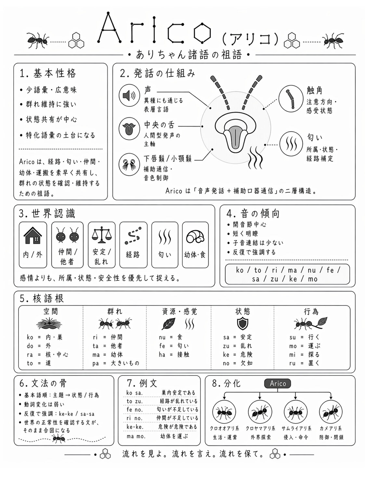
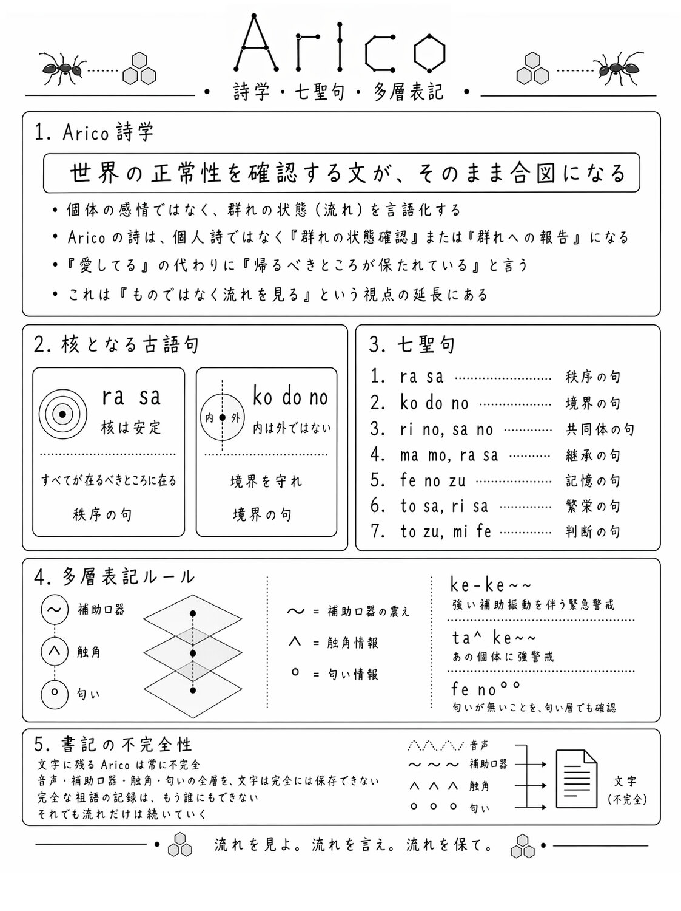
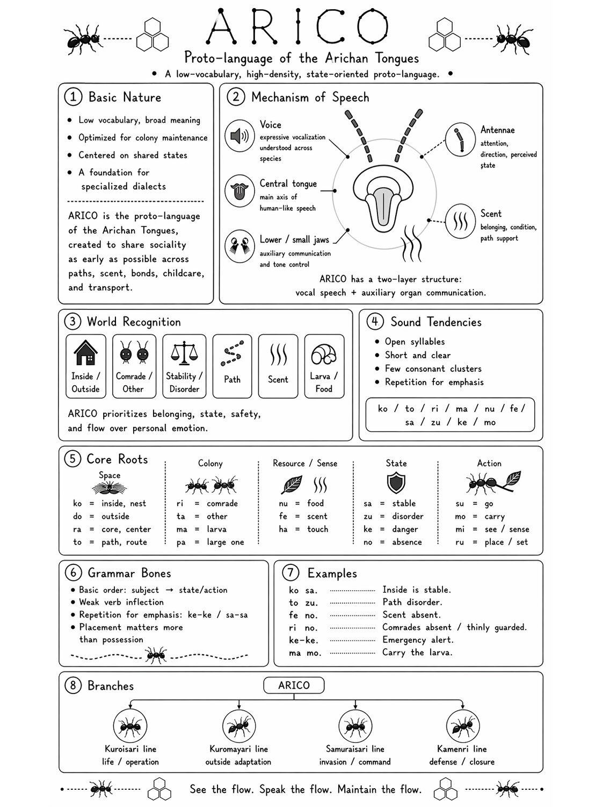
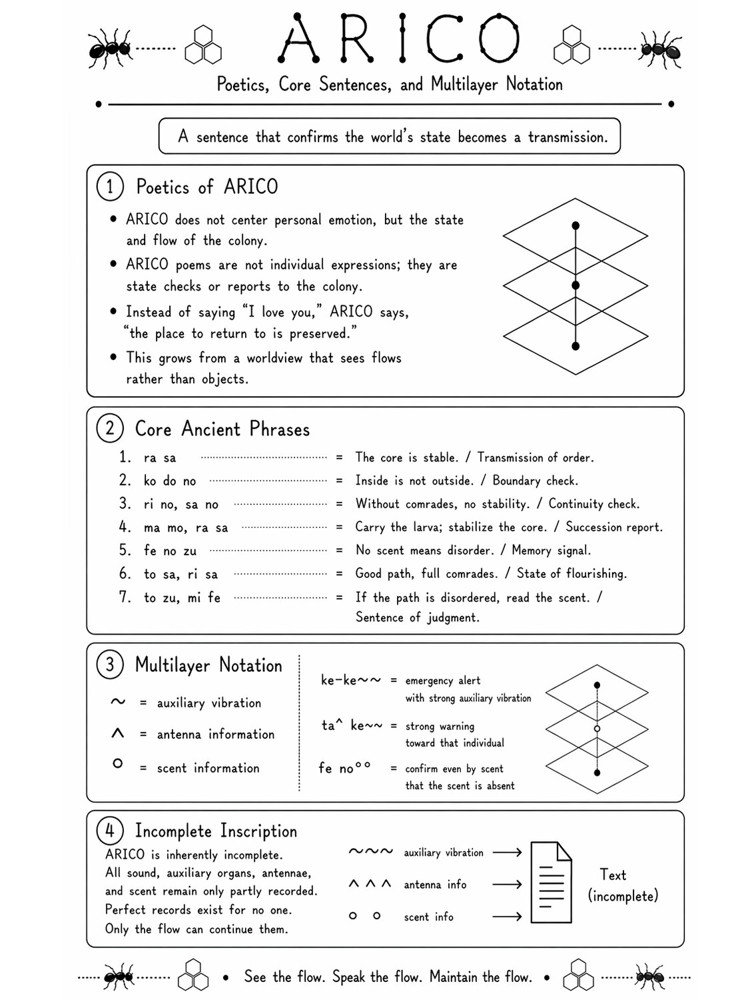

ARICO
資料 / DOCS
×
+
−
○
タップ
·
経路を光らせる
2回タップ
·
語根の詳細を開く
ドラッグ
·
地図を動かす
— タップで閉じる —
ARICO · 設定資料 / DOCUMENTATION
×
日本語
ENGLISH
1 / 2 · 祖語の構造

2 / 2 · 詩学・七聖句・多層表記

1 / 2 · Proto-language Structure

2 / 2 · Poetics, Core Sentences, and Multilayer Notation
